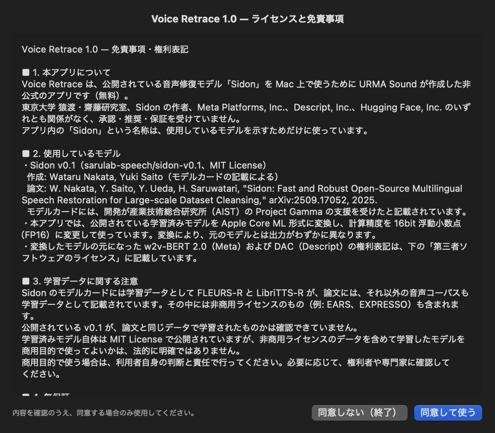
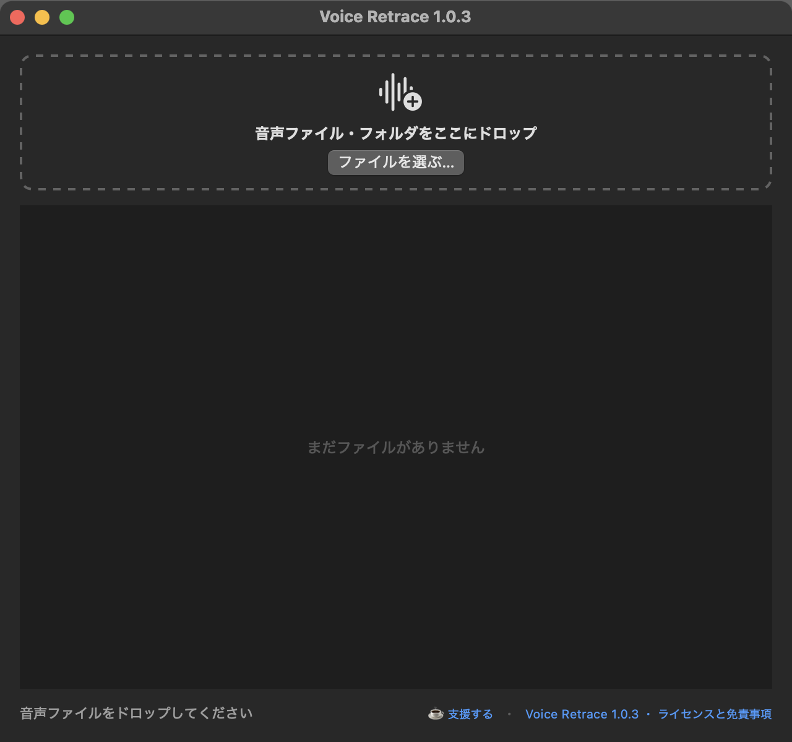
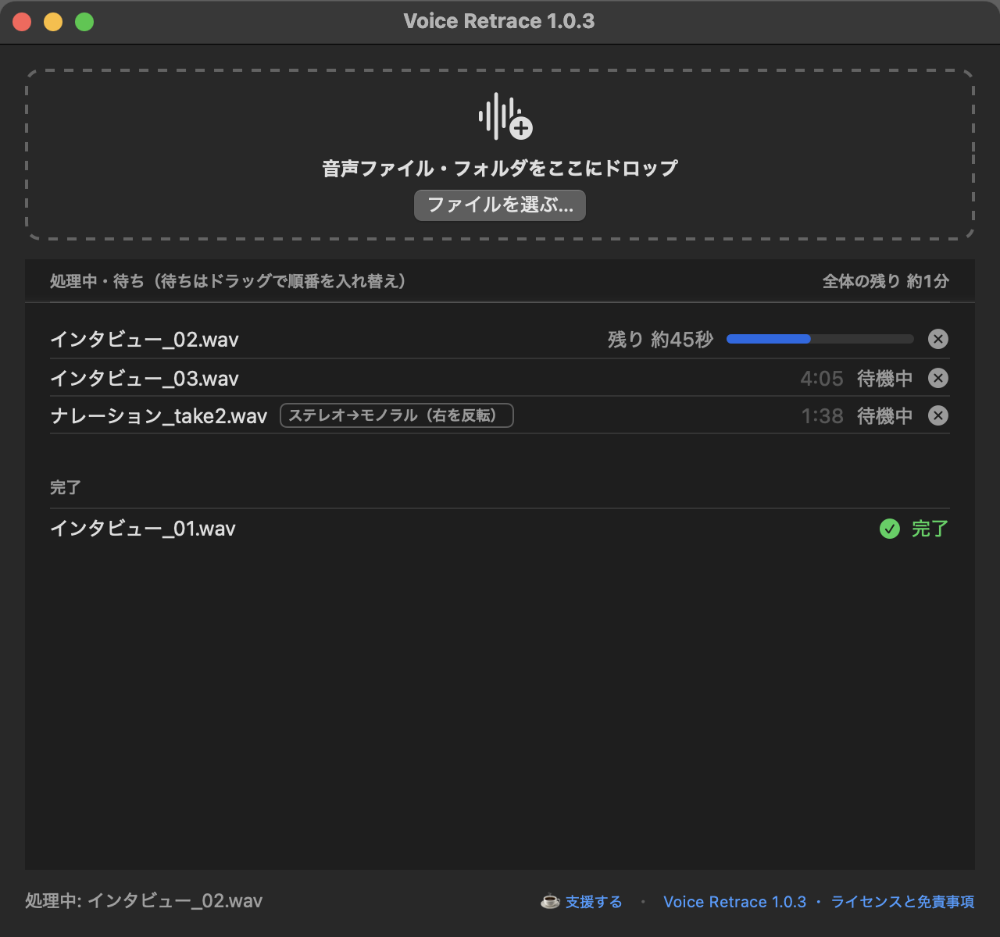
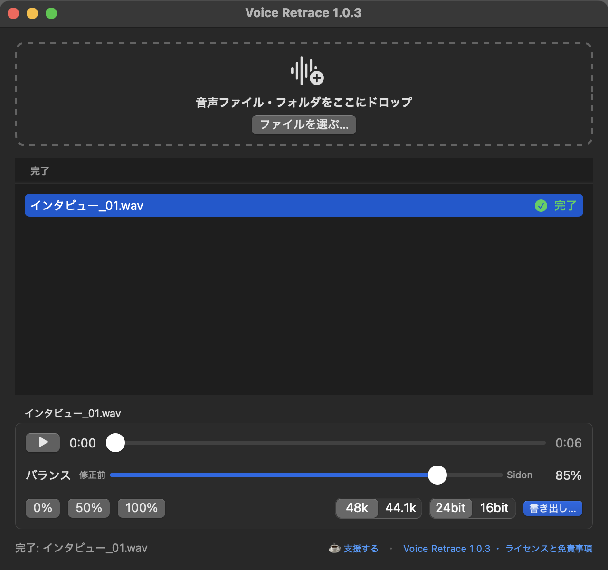

Voice Retrace マニュアル
バージョン 1.0
https://urmasound.github.io/voice-retrace/ ・ URMA Sound
⬇ このマニュアルを PDF でダウンロード1インストール
必要なもの: Apple Silicon（M1 以降）の Mac、macOS 15 以降、空き容量 約 500MB
- 配布ページから VoiceRetrace-1.0.dmg をダウンロードして、ダブルクリックで開きます。
- 開いたウィンドウの中の「Voice Retrace」を、となりの「Applications」フォルダにドラッグします。
- アプリケーションフォルダから「Voice Retrace」を開きます。初回は「インターネットからダウンロードされたアプリケーションです。開いてもよろしいですか？」と確認されるので、「開く」を押します。
DMG はもう使わないので、Finder のサイドバーで取り出してかまいません。
2初めて開いたとき
最初に「ライセンスと免責事項」が表示されます。

1 2- 同意して使う … 内容を確認し、同意する場合に押します。次からは表示されません。
- 同意しない（終了） … アプリを終了します。
あとから読み返すときは、メニューの「Voice Retrace」→「ライセンスと免責事項…」を選びます。
3音声ファイルを入れる

1 2 3 4- ここにドロップ … 音声ファイルやフォルダを、Finder からウィンドウにドラッグします。ウィンドウのどこに落としても大丈夫です。複数まとめて入れられます。
- ファイルを選ぶ… … ドラッグの代わりに、ファイルを選んで入れることもできます。
- ☕ 支援する … Ko-fi のページが開きます（任意。支援してもしなくても機能は同じです）。
- ライセンスと免責事項 … いつでも読み返せます。
入れられるファイル: wav / aiff / flac / mp3 / m4a / caf
フォルダを入れた場合は、その中の音声ファイルだけが処理されます（中のフォルダまでは見ません）。
得意なのは話し声です。音楽・歌・楽器・効果音は、消えたり崩れたりします。
フォルダを入れた場合は、その中の音声ファイルだけが処理されます（中のフォルダまでは見ません）。
得意なのは話し声です。音楽・歌・楽器・効果音は、消えたり崩れたりします。
4処理の進み具合・キャンセル・並べ替え
入れたファイルは、上から順番に1つずつ処理されます。

1 2 3 4 5- 処理中のファイル … いちばん上に表示され、残り時間の目安と進み具合のバーが出ます。
- × ボタン … 処理中のファイルはその場で止め、待っているファイルは処理待ちから外します。止めたファイルは「完了」の欄に「キャンセル」として残ります。
- 処理待ちのファイル … ドラッグで順番を入れ替えられます。処理中のファイルの上には入れられません。先に処理したいファイルがあるときは、処理中のファイルを × で止めてください。
- 全体の残り … 処理待ちも含めた、終わるまでの時間の目安です。使ううちに、お使いの Mac に合わせて正確になります。
- 完了 … 終わったファイルがここに並びます。選ぶと、下に再生パネルが出ます。
かかる時間の目安: M5 Pro で、3分の音声が約8秒です。古い機種ほど時間がかかります。
キャンセルやエラーになったファイルは、右クリック →「もう一度処理する」で処理待ちの最後に戻せます。
右クリックからは「Finder で表示」「リストから削除」もできます。
キャンセルやエラーになったファイルは、右クリック →「もう一度処理する」で処理待ちの最後に戻せます。
右クリックからは「Finder で表示」「リストから削除」もできます。
5聴いて、混ぜて、書き出す

1 2 3 4 5 6 7- 完了したファイルを選ぶ … 選んだファイルが、下のパネルで再生できるようになります。
- 再生・一時停止 … スペースキーでも操作できます。
- 再生位置 … ドラッグして、聴きたいところへ移動します。
- バランス … 右端（100%）が Sidon で修復した音、左端（0%）が修正前の音です。再生しながら動かすと、その場で音が変わります。
- 0% / 50% / 100% … バランスをすぐその値にします。修正前と修復後を聴き比べるときに便利です。
- 書き出し形式 … サンプルレート（48k / 44.1k）とビット深度（24bit / 16bit）を選びます。選んだ設定は次回も覚えています。
- 書き出し… … 今のバランスと形式で WAV を保存します。保存先とファイル名を確認して「保存」を押します。
Sidon は、ノイズを差し引くのではなく、声の特徴から音声を作り直します。そのため、修正前の音を多く混ぜると、2人が同時に話しているようににじんで聞こえることがあります。耳で聴きながら、ちょうどいいところを探してください。
6書き出したファイル
| 保存先 | 初期値は、元のファイルと同じフォルダです（保存の画面で変えられます） |
|---|---|
| ファイル名 | バランス 100% のとき 元の名前_retrace.wavそれ以外は 元の名前_retrace_mix85.wav のように、バランスの値が入ります |
| 形式 | WAV・モノラル。48kHz / 44.1kHz、24bit / 16bit から選択（16bit のときはディザをかけています） |
| 長さ・位置 | 元のファイルと同じ長さです。DAW で元の音と頭をそろえて並べると、位置もぴったり合います |
| 元のファイル | 書き換えません |
ステレオのファイルは、左右をまとめてモノラルで処理します。音量は、処理の前に一番大きいところが約 −1dB になるようそろえます。
7うまくいかないとき
- アプリが開けない
- Apple Silicon（M1 以降）の Mac と macOS 15 以降が必要です。Intel の Mac では動きません。会社や学校などで管理されている Mac では、管理者の設定で開けないことがあります。
- 一覧に「エラー」と出た
- 「エラー」の文字にマウスを乗せると、理由が表示されます。音声ファイルが壊れている、対応していない形式、などが考えられます。別の形式（wav など）に書き出し直してから入れてみてください。
- 「音声ファイルが見つかりませんでした」と出た
- 入れたファイルが対応形式（wav / aiff / flac / mp3 / m4a / caf）ではないか、フォルダの中に音声ファイルがありません。DAW の波形キャッシュなどは処理されません。
- 処理に時間がかかる
- 古い機種ほど時間がかかります。長いファイルは、処理待ちのうちに順番を入れ替えて、急ぐものを先にしてください。
- 声がにじむ・二重に聞こえる
- バランスを 100%（Sidon 側）に近づけてください。修正前の音を混ぜるほど、にじみやすくなります。
- 音楽や効果音が消えた・崩れた
- Sidon は話し声専用です。声以外の音は消えたり崩れたりします。声だけのトラックに使うのがおすすめです。
- アンインストールしたい
- アプリケーションフォルダの「Voice Retrace」をゴミ箱に入れてください。設定も消す場合は、ターミナルで
defaults delete jp.urmasound.voiceretraceを実行します。
解決しないときは urmasound.inc@gmail.com までご連絡ください。お使いの Mac の機種と macOS のバージョン、画面のスクリーンショットがあると助かります（対応はできる範囲で行います）。